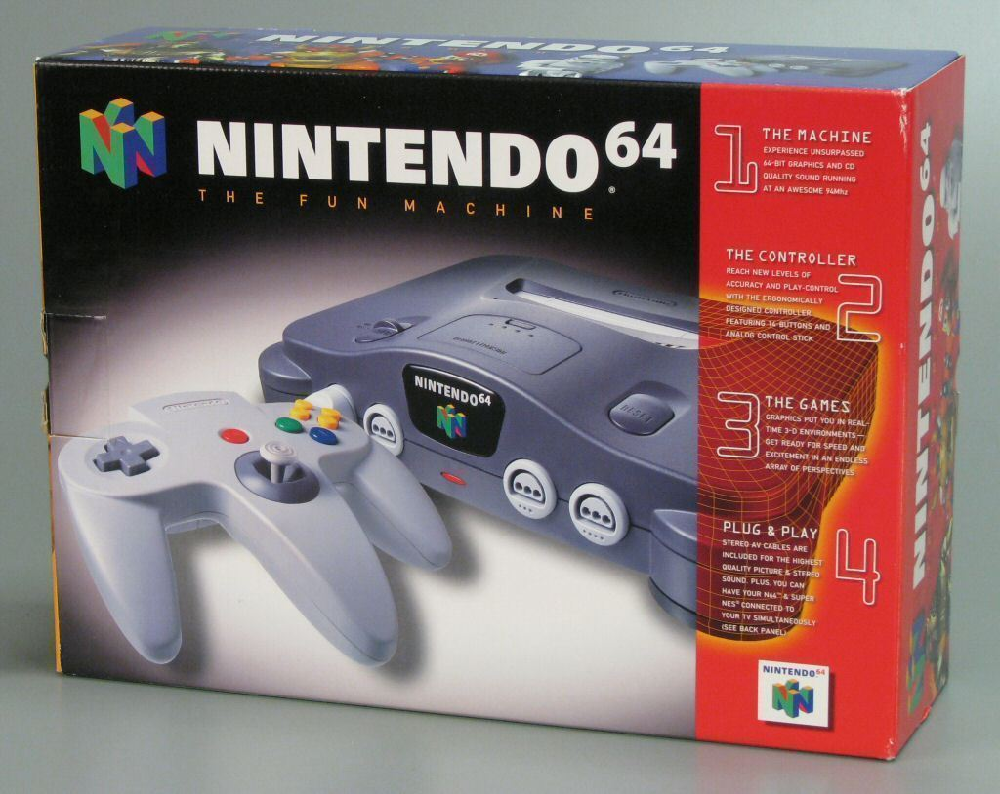

< Nintendo tenía temor a la piratería, por lo que optó por seguir
usando los antiguos cartuchos. El resultado fue muy malo, ya que
el cartucho era más costoso de producir que el CD, a pesar de ser
mucho más rápido (que era la justificación de Nintendo) y de menor
capacidad. Además, su chip gráfico estaba bastante limitado en cuanto
al texturizado en 3D, hecho que impedía generar gráficos realistas.
Todo resultó en la pérdida de la mayoría de third-parties, incluso
aquellas comprometidas tradicionalmente con Nintendo. Al final acabó
teniendo pocos juegos, aunque de gran calidad, la mayoría del propio fabricante y de sus
departamentos externos. Entre ellos se podría destacar Super Mario 64, The Legend of Zelda: Ocarina of Time o Banjo-Kazooie.
>
